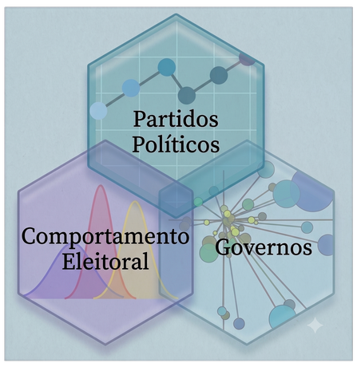
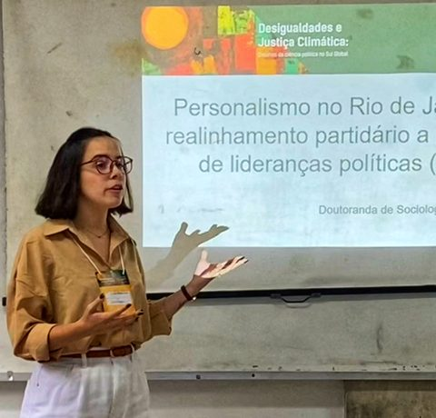
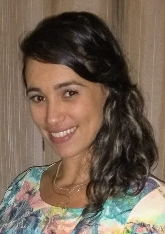
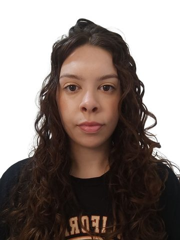
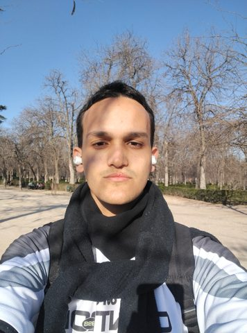
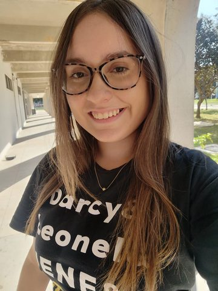

NERD — Núcleo de Estudos em Representação e Democracia
Pesquisa sobre a evolução política e eleitoral dos municípios brasileiros — e sua relação com o desenvolvimento.
De onde vem e o que faz
O Núcleo de Estudos em Representação e Democracia — NERD tem por objetivo promover pesquisas sobre a evolução política e eleitoral nos níveis subnacionais, principalmente no nível municipal, assim como a relação da mesma com o desenvolvimento.
O grupo aborda a interseção entre três grandes dimensões da análise de sistemas políticos democráticos: governos, comportamento eleitoral e partidos políticos. A partir dos estudos sobre comportamento dos eleitores, integra os achados empíricos às teorias sobre estratégias dos partidos políticos nas administrações públicas subnacionais, dialogando com análises sobre reeleição de prefeitos, ideologia partidária e gastos públicos no Brasil.
Suas atividades procuram atender à demanda por informações e análises no Brasil, tendo em conta a considerável escassez de informações empíricas sobre as características, o funcionamento e o desempenho das instituições políticas no nível municipal, bem como a interação da dimensão política com o desenvolvimento socioeconômico.

- Difundir os resultados das pesquisas para o âmbito acadêmico e extra-acadêmico por meio de encontros, seminários e mini-cursos.
- Promover a participação de alunos de graduação (iniciação científica) e de pós-graduação nas atividades do núcleo.
- Estruturar e compartilhar bases de dados destinadas a subsidiar pesquisas acadêmicas e atender demandas de instituições públicas e privadas.
- Participar de editais de financiamento de pesquisas e de atividades de extensão, ampliando o alcance do núcleo.
As três dimensões que orientam a agenda
Partidos políticos
Estratégias partidárias, ideologia e sua expressão nas administrações públicas subnacionais.
Comportamento eleitoral
Competição eleitoral, reeleição e as escolhas do eleitor nos municípios brasileiros.
Governos
Gestão pública, gastos, políticas municipais e sua relação com o desenvolvimento.
11 integrantes
Vitor de Moraes Peixoto
Professor Associado Universidade Estadual do Norte Fluminense Darcy Ribeiro Centro de Ciências do Homem — Laboratório de Estudos da Sociedade Civil e do Estado
Renato Barreto de Souza
Professor do Instituto Federal Fluminense Pós-doutorando do Programa de Pós-Graduação em Sociologia Política — UENF Laboratório de Estudos do Estado e da Sociedade Civil

Rafaella Lopes Martins Jaeger
Doutora em Sociologia Política pela UENF (PPGSP), bolsista de excelência FAPERJ Nota 10 (DSC-10) Mestre em Ciência Política pela Universidade Federal de São Carlos (PPGPOL/UFSCar) Pesquisa em comportamento político

Gisele Braga Bastos
Estágio pós-doutoral no PPGSP/UENF (PIPD/CAPES) e na Universidade NOVA de Lisboa (PIPD-DRI/CAPES) Doutora em Sociologia Política — UENF · Mestre em Ciências Sociais — UFJF Supervisora de pesquisas do Projeto de Educação Ambiental PEA Pescarte

Bruna Gomes de Oliveira
Bacharela em Administração Pública — UENF Ex-bolsista de Iniciação Científica (IPEAD, Projeto PEA Pescarte) Políticas públicas, desigualdades sociais e educação ambiental
Rafael Soares Salles
Doutorando em Sociologia Política — UENF (desde 2024) Mestre em Sociologia Política — UENF (2022) · Graduado em Direito — UFRJ Sociologia da Educação, Ciência Política e comportamento eleitoral
Beatriz Siqueira Rodrigues
Mestranda do Programa de Pós-Graduação em Sociologia Política — UENF Bacharel em Ciências Sociais — UFF Integrante do Observatório das Instituições Políticas e Democracia

Davi Athaydes Leite
Mestrando em Ciência Política pelo IESP-UERJ Bacharel em Administração Pública — UENF · Bolsista Nota 10 FAPERJ Análise de dados de survey e metodologia quantitativa
Kaio Ribeiro Bárbara
Mestrando em Ciência Política — UFPE Bacharel em Administração Pública — UENF Métodos quantitativos aplicados à Ciência Política

Luma Ferreira Boechat
Bolsista de Iniciação Científica do CNPq Graduanda em Administração Pública — UENF · Técnica em Administração — IFF Laboratório de Estudo da Sociedade Civil e do Estado (LESCE)
Ana Luiza Bastos
Graduanda em Administração Pública — UENF Laboratório de Estudo da Sociedade Civil e do Estado (LESCE)
Localização
Universidade Estadual do Norte Fluminense Darcy Ribeiro Centro de Ciências do Homem — CCH — Sala 108-B Av. Alberto Lamego, 2000 — Parque Califórnia Campos dos Goytacazes — RJ — CEP 28013-602 Tel. (22) 2739-7040